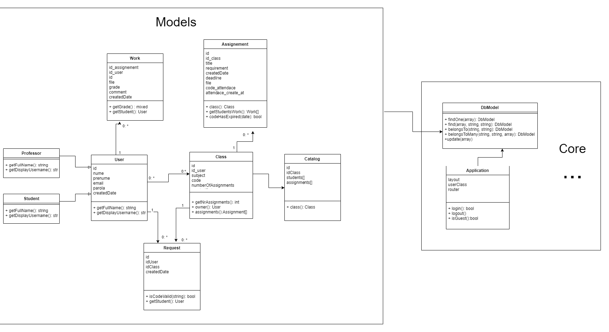

Această documentație are rolul de a detalia utilizarea aplicației web ClassHub.
ClassHub are o interfață intuitivă şi îţi permite să creezi rapid grupuri şi clase, să aloci și să corectezi teme, să programezi lucrări de control şi teze, să urmăreşti progresul elevilor şi nu doar atât. Centralizând totul pe o singură platformă, eliminăm birocraţia şi te ajutăm să câştigi timp pentru activitatea didactică.
Pentru acest proiect am optat pentru construirea unei arhitecturi de tipul MVC, datorită modularității pe care acest model o oferă.
Pentru o organizare mai bună, componenentele proiectului au fost împărțite în mai multe directoare, fiecare având specificul său.
Acest director este entry point-ul aplicației noastre. Aici se află toate informațiile necesare pentru afișarea interfeței utilizatorului, cum ar fi: fișierele CSS responsabile cu stilul paginilor, fișierele javascript responsabile cu dinamicitatea paginilor, directorul imagini în care se află toate iconițele, fișierul care realizează încărcarea automată a claselor "autoLoad.php" pentru folosirea cu usurinta a namespace-urilor și punctul de intrare în aplicație reprezentat de fișierul index.php.
În acest director se afla nucleul aplicației noastre, aici putem găsi clase precum: Application, Config, Controller, Session, View etc. Toate aceste clase formează baza aplicației noastre.
Acest director conține toate fișierele care se ocupă cu migrațiile către baza de date. El conține clase care realizează diverse operații DML asupra bazei de date la care este conectată aplicația, precum: crearea tabelului de utilizatori, crearea tabelului responsabil cu postările de pe site etc.
Deoarece arhitectura aplicației este un MVC, în aceste directoare pastrăm toate modele și controllerele aplicației.

Funcționalitățile aplicației se pot plasa în două categorii in funcție de utilizator, cele două fiind de:
Stundentul are posibilitatea de a folosi ClassHub pentru :
Profesorul are posibilitatea de a folosi ClassHub pentru :
Aceasta interfata a fost aleasa datorita simplitatii experientei utilizatorului si rapiditatea de a invata sa fie utilizata.
Bara de navigatie este un element comun al paginilor celor 2 tipuri de utilizatori, aceasta avand:
Atunci cand un utilizator acceseaza o pagina a aplicatie fara a fi autentificat, acesta este redirectionat la pagina de autentificare automat. Un utilizator se poate autentifica folosind un cont de student sau un cont de profesor - cel din urma avand mai multe drepturi. In momentul de fata aplicatie permite autentificare in modul student folosind numele "student" cu orice parola, iar in modul profesor folosing numele "profesor" cu orice parola.
Un student poate participa la un curs dupa ce iși introduce id-ul și este acceptat de către profesor.
Un student isi poate confirma prezența la ora prin introducerea codului unic creat de către profesor.
Studentul va avea posibilitatea de a iși încărca temele si fișierele necesare cursului.
Profesorul isi poate crea clasele necesare cursului, accepta sau respinge accesul studenților la acestea.
Profesorul poate nota stundenții, notele fiind prezente într-un catalog care poate fi ulterior exportat. Nota finală se poate calcula după o metodă aleasă de profesor.
Profesorul poate adăuga teme claselor sale, acestea având o descriere și un termen limită.